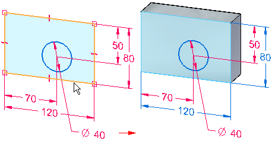
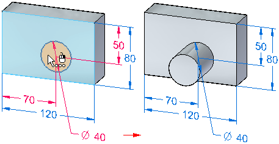

Sketch consumption and dimension migration
In the synchronous environment, when you use sketch elements to construct a feature, the sketch elements are consumed and the 2D dimensions you placed on the sketch migrate as driven dimensions to the appropriate edges on the solid body, whenever possible.

Use the Migrate Geometry and Dimensions command command on the shortcut menu when selecting a sketch in PathFinder to control whether sketch elements are consumed and dimensions are migrated.
Automatic sketch consumption and dimension migration
By default, the Migrate Geometry and Dimensions command is set for a new document. The sketch elements are automatically consumed and 2D dimensions are automatically migrated when you use them to construct features. After you construct a feature, the 2D sketch geometry is moved to the Used Sketches collector in PathFinder, and the 2D dimensions migrate as driven 3D PMI model dimensions.
You can disable the automatic consumption of sketch elements and migration of 2D dimensions on a sketch-by-sketch basis by clearing the Migrate Geometry and Dimensions command on the shortcut menu when a sketch is selected in PathFinder.
All model dimensions, whether migrated from sketches or added to edges on the 3D model directly, are PMI dimensions. PMI dimensions are displayed on PathFinder in the PMI collection, Dimensions sub-collection.
To learn more about creating and using PMI, see the Help topic, PMI dimensions and annotations.
Partially migrated sketches and dimensions
In many cases, only some of the sketch elements on a single sketch are used to construct a feature. If this is the case, only the selected sketch elements and the associated 2D dimensions are consumed and migrated.

During this process, dimensions and constraints may be connected to both body edges and to remaining sketch geometry. If the sketch contains stacked dimensions, then some dimensions in the stack may migrate individually. Other dimensions, such as coordinate dimensions, do not migrate until all of the 2D geometry they are attached to has been used to construct a feature.
As you continue to construct features using the remaining sketch elements, sketch elements are consumed and dimensions are migrated.

Dimension locking status after migration
2D dimensions are locked by default. When they migrate to the 3D model, they are unlocked.
Dimension colors are determined by settings on the Colors page of the Options dialog box.
Learn more
Working with sketch dimensionsLocked sketch dimensions